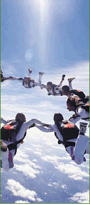

|
About UsThe Gabrick Weiss Group (GWG) was founded in 2004 with a small group of seasoned IT consulting professionals. Our goal is still simple: we want to provide the highest level of customer service in delivering superior mobile and Internet solutions for our customers. To do so, we only employ a small team of highly skilled and trusted resources. Our FoundersKurt GabrickManaging DirectorAs our chief technologist, Kurt Gabrick is the driving force behind the technical innovation and the quality solutions we deliver to customers. Kurt has ultimate responsibility for the technical design and delivery of all the solutions we develop. Kurt's expertise and experience are essential ingredients in the continuing satisfaction of our customers and the success of the company. Prior to founding GWG, Kurt held technical leadership positions at a variety of professional services and software development companies. He led professional service engagements during his tenures at IBM Global Services, Enterpulse, and KnowledgeNet. He also authored several technical patents and a book on J2EE and XML software development. In addition to technical expertise, Kurt is very active in business operations. He holds an MBA in Management Information Systems. GWG is his second endeavor as an entrepreneur, having previously owned a software development company. The TeamGWG employs technologists, project managers, graphic designers, and other skilled consultants. Our core group of talented professionals boasts more than 80 years of combined experience in delivering quality to customers. Our industry experience includes financial services, software, retail and distribution, entertainment, manufacturing, and telecommunications. |
 |